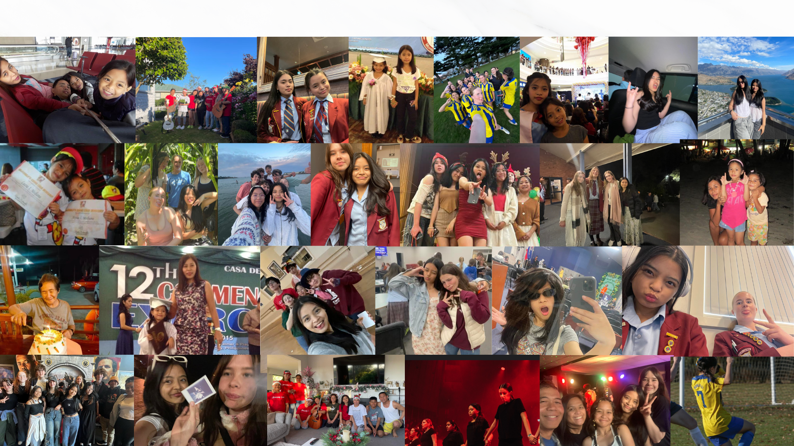

Short introduction
Hi there! My name is Alyssa Mediano and I made this website to show other people my creativity through my passions. I’m a motivated and creative individual with a passion for design, problem-solving, and bringing ideas to life. I enjoy exploring new challenges, learning from experiences, and expressing my creativity through visual and spatial design projects.
Some people grew up with soft lullabies. I grew up with instructions. Hold your pen like this. Talk slower. Say yes, even if you don’t understand. Just smile, even if it’s unpleasant. I come from a house of translations, not just words but worlds. To translate dreams to direction, to translate fear into paperwork, to translate shame into silence, and to translate love into sacrifice.
“To speak for those who have no voice is the highest calling of the law.” To me law is no translation that could ever change. Because law to me is the final language. The final language? It is the language that holds power, access, rights, but then again it does sound like it is often a locked door. My father is a seafarer and as a child of an OFW, I rarely got to feel the warm hugs, the laughter, and the reassurance. In the way that people say, “You’re so lucky” without knowing what I lost because all they saw was the gain. When I was younger, I saw that constant locked door everywhere. How my parents hesitated before asking questions and how the rules were always followed but never explained. I don’t want to push past that door for myself but too hold it wide and open and rebuild it with no locks.
I am fluent in 2 languages and 1 dialect, but I want to be fluent in law. So that I can help others understand what they’re entitled to feel. I want them to feel secure, heard, included, and understood.
Law does have its complexities with people saying that it is “cold,” but I think it's frustrating, flawed, but full of potential. I think it’s human. I think it speaks to people in many ways. People can’t translate well but see reassurance within its language. If chosen, I’ll bring my full self. My questions, my fire, my heritage. I will aspire, inspire, and perspire. And I won’t just be there to learn law, but to understand its rhythm, to speak it clearly, and one day, to translate it for those still waiting at that same locked door.